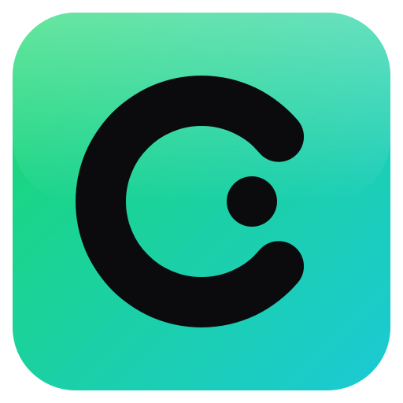
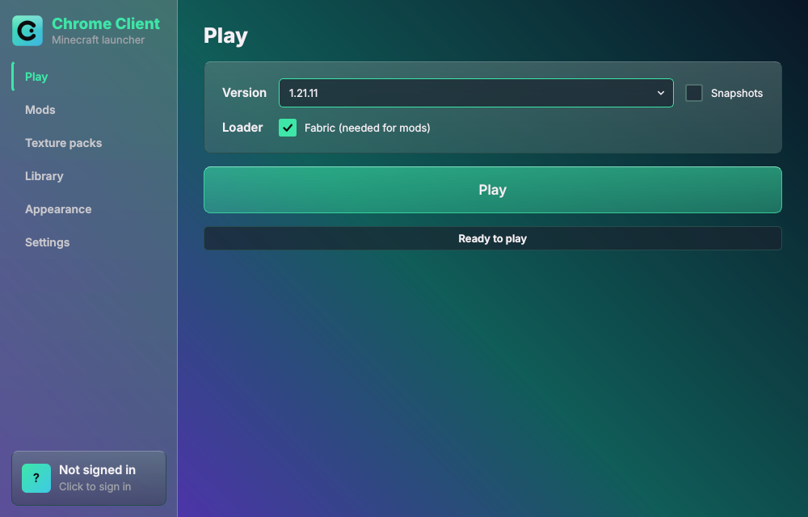

Chrome Client
The Minecraft launcher that looks the way you want.
DownloadWindows · Free · Chrome-Client.zip
Download started. Unzip it and run setup.bat.

The mod
In-game features
- Glass menuPress Right Shift. Tabs, modules and settings, all saved.
- HUD infoFPS, CPS, ping, coordinates, direction and clock.
- KeystrokesWASD, mouse buttons and space light up as you press them.
- Armor statusYour armor pieces with the durability left on each.
- Move HUDDrag the info, keystrokes, armor and the game's own hotbar, health and more.
- Zoom and FreelookHold C to zoom. Hold Alt to look around without turning.
- Auto sprintHold forward and you sprint.
- CosmeticsHats, capes and wings. Other Chrome Client players see yours.
- BuddyA small buddy wearing any account's skin follows you and waves, hops and dances.
- YT MusicA music pill that drops into a player, with lyrics floating in the world.
- EnvironmentSky, fog and particle themes in green, blue, red, yellow or your own color.
- Crosshair and low fireA custom crosshair, and a shorter fire overlay.
The launcher
Launcher features
- Mods from ModrinthSearch and install inside the launcher. Missing dependencies are fetched for you.
- Fabric in one tickTick Fabric and the launcher installs and starts it.
- Texture packs and groupsSwitch a whole group of packs on or off at once.
- Themes with real glassFrosted cards, gradients and picture backgrounds in any color.
- Discord statusShow "Playing Minecraft" with your own text and timer.
- Streaming modeHides your Windows username and folder paths in the window.
- PerformanceInstalls Entity Culling and starts the game with tuned Java flags.
- Creamy soundsSoft UI sounds across the launcher.
Install in 3 steps
- Press Download and unzip the file anywhere.
- Double-click
setup.bat. It installs what the launcher needs and makes a desktop shortcut. If Python is missing, install it with "Add python.exe to PATH" ticked, then runsetup.batagain. - Open Chrome Client from your desktop and press Play.